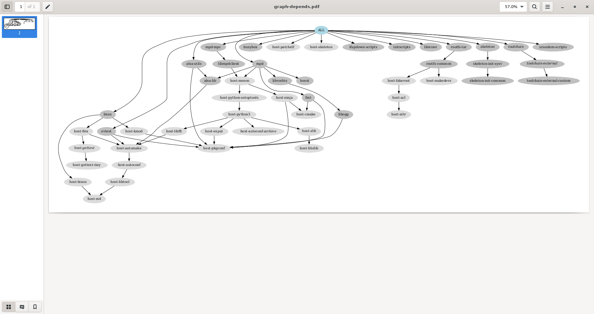

22. Buildroot
22.1 Objectives
- discover how a build system is used and how it works, with the example of the Buildroot build system.
Compared to the previous lab, we are going to build a more elaborate system, still containing alsa-utils (and of course its alsa-lib dependency), but this time using Buildroot, an automated build system.
The automated build system will also allow us to add more packages and play real audio on our system, thanks to the Music Player Daemon (mpd) and its mpc client.
22.2 Required tools
-
Ubuntu packages:
evincegraphvizplus those from the previous labs.
-
Buildroot, either as:
-
git repository tag
v2022.02
-
22.3 Source code
The official Buildroot website is available at https://buildroot.org/.
Let's clone the git repository, branching the 2022.02 release, which is a LTS (Long Term Support, we're just sticking to the original one), naming after this lab.
$ LAB_PATH="$HOME/embedded-linux-bbb-labs/buildroot"
$ cd $LAB_PATH
$ label="2022.02"
$ git clone https://git.buildroot.net/buildroot/
$ cd buildroot/
$ git checkout -b embedded-linux-bbb $label
Several subdirectories or files are visible. The most important ones are:
-
bootcontains the Makefiles and configuration items related to the compilation of common bootloaders (GRUB, U-Boot, Barebox, etc.) -
boardcontains board specific configurations and root filesystem overlays. -
configscontains a set of predefined configurations, similar to the concept of defconfig in the kernel. -
docscontains the documentation for Buildroot. -
fscontains the code used to generate the various root filesystem image formats. -
linuxcontains the Makefile and configuration items related to the compilation of the Linux kernel. -
Makefileis the main Makefile that we will use to use Buildroot: everything works through Makefiles in Buildroot; -
packageis a directory that contains all the Makefiles, patches, and configuration items to compile the user space applications and libraries of your embedded Linux system.
Have a look at various subdirectories and see what they contain. -
systemcontains the root filesystem skeleton and the device tables used for a static/dev. -
toolchaincontains the Makefiles, patches and configuration items to generate the cross-compiling toolchain.
22.4 Configuration
As we will want Buildroot to build a kernel with a custom configuration, and our custom patch, let's add our own subdirectory under board.
Then, copy our kernel configuration (latest) and kernel patch (latest).
$ cd "$LAB_PATH/buildroot/"
$ mkdir -p board/bootlin/training/
$ cp ../../tinysystem/kernel-blockfs.config board/bootlin/training/linux.config
$ cp ../../hardware/0001-Custom-DTS-for-Bootlin-lab.patch board/bootlin/training/
In our case, we would like to:
-
Generate an embedded Linux system for ARM.
-
Use an already existing external toolchain instead of having Buildroot generating one for us.
-
Compile the Linux kernel and deploy its modules in the root filesystem.
-
Integrate BusyBox,
alsa-utils,mpd,mpcandevtestin our embedded Linux system. -
Integrate the target filesystem into a tarball.
To run the configuration utility of Buildroot, simply run:
Set the following options. Don't hesitate to press the Help button whenever you need more details about a given option!
In Target options:
-
Target Architecture=ARM (little endian). -
Target Architecture Variant=cortex-A8. -
Target ABI=EABIhf. -
Floating point strategy=VFPv3-D16.
In Toolchain:
-
Toolchain type=External toolchain. -
Toolchain=Custom toolchain. -
Toolchain path=$(HOME)/x-tools/arm-training-linux-uclibcgnueabihf, which is the one we built. -
External toolchain gcc version=11.x. -
External toolchain kernel headers series=5.15.x. -
External toolchain C library=uClibc/uClibc-ng. -
Enable
Toolchain has WCHAR support?. -
Enable
Toolchain has SSP support?. -
Enable
Toolchain has C++ support?.
In Kernel:
-
Enable
Linux Kernel. -
Kernel version=Latest version (5.15). -
Custom kernel patches=board/bootlin/training/0001-Custom-DTS-for-Bootlin-lab.patch, our hand-made patch. -
Kernel configuration=Using a custom (def)config file. -
Configuration file path=board/bootlin/training/linux.config. -
Enable
Build a Device Tree Blob (DTB). -
In-tree Device Tree Source file names=am335x-boneblack-custom.
In Target packages:
-
Keep
BusyBox (default version)and keep the BusyBox configuration proposed by Buildroot. -
Under
Audio and video applications:-
Enable
alsa-utils, and in the submenu:- Only keep
speaker-test.
- Only keep
-
Enable
mpd, and in the submenu:- Keep only
alsa,vorbisandtcp sockets.
- Keep only
-
Enable
mpd-mpc.
-
-
Under
Hardware handling:- Enable
evtest.
This userspace application allows to test events from input devices. This way we will be able to test the Nunchuk by getting details about which buttons were pressed.
- Enable
In Filesystem images:
- Enable
tar the root filesystem.
Exit the menuconfig interface saving into the usual .config file. Also make a backup copy for reference.
22.5 Build
Just run the canonical make:
Buildroot will first create a small environment with the external toolchain, then download, extract, configure, compile, and install each component of the embedded system.
All the compilation has taken place in the output/ subdirectory. Let's explore its content:
-
buildis the directory in which each component built by Buildroot is extracted, and where the build actually takes place. -
hostis the directory where Buildroot installs some components for the host.
As Buildroot doesn't want to depend on too many things installed in the developer machines, it installs some tools needed to compile the packages for the target.
In our case it installedpkg-config(since the version of the host may be ancient) and tools to generate the root filesystem image (genext2fs,makedevs,fakeroot). -
imageswhich contains the final images produced by Buildroot. In our case it contains a tarball of the filesystem, calledrootfs.tar, plus the compressed kernel and DTB (Device Tree Binary).
Depending on the configuration, there could also a bootloader binary or a full SD card image. -
staging, which contains the "build" space of the target system, all the target libraries, with headers and documentation.
It also contains the system headers and the C library, which in our case have been copied from the cross-compiling toolchain. -
targetis the target root filesystem. All the applications and libraries, usually stripped, are installed in this directory.
However, it cannot be used directly as the root filesystem, as all the device files are missing: it is not possible to create them without being root, and Buildroot has a policy of not running anything as root.
22.6 Run the generated system
Go back to the $HOME/embedded-linux-bbb-labs/buildroot/ directory.
Create a new nfsroot directory that is going to hold our system, exported over NFS.
Go into this directory, and untar the rootfs.
$ mkdir -p "$LAB_PATH/nfsroot/"
$ cd "$LAB_PATH/nfsroot/"
$ tar xfv "../buildroot/output/images/rootfs.tar"
Add this new nfsroot directory to the list of directories exported by NFS in /etc/exports.
You could just replace the symlink we used for BusyBox, pointing instead to this new nfsroot.
$ sudo rm -f /srv/nfs
$ sudo ln -snv "$LAB_PATH/nfsroot/" /srv/nfs
'/srv/nfs' -> '/home/me/embedded-linux-bbb-labs/buildroot/nfsroot/'
$ sudo chown -R tftp:tftp /srv/nfs
$ sudo exportfs -ar
$ sudo systemctl restart nfs-kernel-server
Also update the kernel and Device Tree Binaries used by your board, from the ones compiled by Buildroot in output/images/.
$ cd "$LAB_PATH/buildroot/output/"
$ cp images/zImage /srv/tftp/zImage-buildroot
$ cp images/zImage /srv/tftp/zImage
$ cp $(find images -name "am335x-boneblack-custom.dtb") /srv/tftp/
You should restore U-Boot to work with TFTP and NFS. Run the board, press a key to reach the U-Boot prompt, and restore the environment variables. Finally, reset the board.
You should now be able to log in (root account, no password) to reach a shell.
...
Hit any key to stop autoboot: 0
=> setenv bootcmd $bootcmd_tftp
=> setenv bootargs $bootargs_nfs
=> saveenv
=> reset
...
Welcome to Buildroot
buildroot login: root
#
22.7 Loading the USB audio module
You can check that no kernel module is loaded yet.
Try to load the snd_usb_audio module from the command line.
# lsmod
Module Size Used by Not tainted
# modprobe snd_usb_audio
mc: Linux media interface: v0.10
usbcore: registered new interface driver snd-usb-audio
Check that Buildroot has deployed the modules for your kernel in /lib/modules/.
# find /lib/modules/ -name snd-usb-audio.ko
/lib/modules/5.15.26/kernel/sound/usb/snd-usb-audio.ko
Let's automate this now!
Look at the /etc/inittab file generated by Buildroot (Q to quit less), and at the contents of the /etc/init.d/ directory, in particular of the rcS file.
$ cd "$LAB_PATH/nfsroot/"
$ less etc/inittab
$ ls etc/init.d/
rcK rcS S01syslogd S02klogd S02sysctl S20urandom S40network S95mpd
#!/bin/sh
# Start all init scripts in /etc/init.d
# executing them in numerical order.
#
for i in /etc/init.d/S??* ;do
# Ignore dangling symlinks (if any).
[ ! -f "$i" ] && continue
case "$i" in
*.sh)
# Source shell script for speed.
(
trap - INT QUIT TSTP
set start
. $i
)
;;
*)
# No sh extension, so fork subprocess.
$i start
;;
esac
done
You can see that rcS executes or sources all the /etc/init.d/S??* files.
We can add our own which will load the top-level modules that we need.
Let's do this by creating an overlay directory, typically under our board-specific directory, that Buildroot adds after building the root filesystem.
Then add a custom startup script, by adding an etc/init.d/S03modprobe executable file to the overlay directory, with content:
$ cd board/bootlin/training/rootfs-overlay/
$ mkdir -p etc/init.d/
$ cat > etc/init.d/S03modprobe <<'EOF'
#!/bin/sh
modprobe snd-usb-audio
EOF
$ chmod +x etc/init.d/S03modprobe
Then, go back to Buildroot's configuration interface.
In System configuration:
- Set
Root filesystem overlay directories=board/bootlin/training/rootfs-overlay.
Build your image again. This should be quick as Buildroot doesn't need to recompile anything. It will just apply the root filesystem overlay.
Update your nfsroot directory, reboot the board, and check that the snd_usb_audio module is loaded as expected.
$ cd "$LAB_PATH/buildroot/"
$ make
$ cd "$LAB_PATH/nfsroot/"
$ rm -rf *
$ tar xfv "../buildroot/output/images/rootfs.tar"
# reboot
...
# lsmod
Module Size Used by Not tainted
snd_usb_audio 217088 0
snd_hwdep 16384 1 snd_usb_audio
snd_usbmidi_lib 28672 1 snd_usb_audio
mc 36864 1 snd_usb_audio
snd_rawmidi 28672 1 snd_usbmidi_lib
snd_pcm 106496 1 snd_usb_audio
snd_timer 28672 1 snd_pcm
snd 61440 6 snd_usb_audio,snd_hwdep,snd_usbmidi_lib,snd_rawmidi,snd_pcm,snd_timer
soundcore 16384 1 snd
You can run speaker-test to check that this application works with the USB headset.
# speaker-test -t sine -l 1
speaker-test 1.2.6
Playback device is default
Stream parameters are 48000Hz, S16_LE, 1 channels
Sine wave rate is 440.0000Hz
Rate set to 48000Hz (requested 48000Hz)
Buffer size range from 2229 to 17832
Period size range from 1114 to 1115
Using max buffer size 17832
Periods = 4
was set period_size = 1114
was set buffer_size = 17832
0 - Front Left
Time per period = 2.647185
22.8 Testing mpd and mpc
The next thing we want to do is play real sound samples with the Music Player Daemon (MPD).
So, let's add music files for MPD to play. Update your root filesystem, and restart your system.
$ cd "$LAB_PATH/buildroot/"
$ mkdir -p board/bootlin/training/rootfs-overlay/var/lib/mpd/music
$ cp ../data/music/* board/bootlin/training/rootfs-overlay/var/lib/mpd/music
$ make
$ cd "$LAB_PATH/nfsroot/"
$ rm -rf *
$ tar xfv "../buildroot/output/images/rootfs.tar"
Using the ps command, check that the mpd server was started by the system, as implemented by the /etc/init.d/S95mpd script.
If that's the case, you are now ready to run mpc client commands to control music playback.
First, let's make mpd process the newly added music files.
Run mpc update on the target:
# mpc update
Updating DB (#2) ...
volume:100% repeat: off random: off single: off consume: off
You should see the files getting indexed by displaying the contents of the /var/log/mpd.log file.
# cat /var/log/mpd.log
Jan 01 00:00 : update: added /6-le-baguette.ogg
Jan 01 00:00 : update: added /7-fireworks.ogg
Jan 01 00:00 : update: added /1-sample.ogg
Jan 01 00:00 : update: added /3-chronos.ogg
Jan 01 00:00 : update: added /4-land-of-pirates.ogg
Jan 01 00:00 : update: added /2-arpent.ogg
Jan 01 00:00 : update: added /5-ukulele-song.ogg
You can also check the list of available files:
# mpc listall
1-sample.ogg
2-arpent.ogg
5-ukulele-song.ogg
3-chronos.ogg
7-fireworks.ogg
6-le-baguette.ogg
4-land-of-pirates.ogg
To play files, you first need to create a playlist. Let's create a playlist by adding all music files to it, then you should be able to start playing its songs.
# mpc add /
# mpc play
1-sample.ogg
[playing] #1/7 0:00/0:19 (0%)
volume:100% repeat: off random: off single: off consume: off
Here are a few further commands for controlling playback:
mpc stop: stop playing.mpc volume +5: increase the volume by 5%.mpc volume -5: reduce the volume by 5%.mpc prev: switch to the previous song in the playlist.mpc next: switch to the next song in the playlist.mpc toggle: toggle between pause and playback modes.
If you find that changing the volume is not available, you can add a custom configuration for MPD, as the standard one provided by Buildroot doesn't support allowing to change the audio playback volume with all sound cards we have tested.
We can simply add a custom MPD configuration file to our overlay.
Run Buildroot again, update your root filesystem, reboot (to get MPD restarted with the new configuration file), and make sure modifying the volume now works.
$ cd "$LAB_PATH/buildroot/"
$ cp ../data/mpd.conf board/bootlin/training/rootfs-overlay/etc/
$ make
$ cd "$LAB_PATH/nfsroot/"
$ rm -rf *
$ tar xfv "../buildroot/output/images/rootfs.tar"
Later, we're going to compile and debug a custom MPD client application.
22.9 Analyzing dependencies
It's always useful to understand the dependencies drawn by the packages we build. First we need to install Graphviz and a PDF viewer:
Now, let's use Buildroot's target to generate a dependency graph. Once generated, it can ve viewed for visual inspection.
$ cd "$LAB_PATH/buildroot/"
$ make graph-depends
Getting dependency tree...
dot -Tpdf \
-o /home/me/embedded-linux-bbb-labs/buildroot/buildroot/output/graphs/graph-depends.pdf \
/home/me/embedded-linux-bbb-labs/buildroot/buildroot/output/graphs/graph-depends.dot
$ evince output/graphs/graph-depends.pdf
$ cp output/graphs/graph-depends.pdf ../graph-depends.pdf
In particular, you can see that adding MPD and its client required to compile Meson for the host, and in turn, Python 3 for the host too. This substantially contributed to the build time.

22.10 Adding a package
We would also like to build our Nunchuk external module with Buildroot.
Fortunately, Buildroot has a kernel-module infrastructure to build kernel modules.
First, create a nunchuk-driver subdirectory under package in Buildroot sources.
The first thing is to create a package/nunchuk-driver/Config.in file for Buildroot's configuration:
config BR2_PACKAGE_NUNCHUK_DRIVER
bool "nunchuk-driver"
depends on BR2_LINUX_KERNEL
help
Linux Kernel module for the I2C Nunchuk.
$ cd "$LAB_PATH/buildroot/"
$ mkdir -p package/nunchuk-driver/
$ cat > package/nunchuk-driver/Config.in <<'EOF'
config BR2_PACKAGE_NUNCHUK_DRIVER
bool "nunchuk-driver"
depends on BR2_LINUX_KERNEL
help
Linux Kernel module for the I2C Nunchuk.
EOF
$ cp package/nunchuk-driver/Config.in ../nunchuk-driver-Config.in
Then add a line to package/Config.in to include this file, for example right before the line including package/nvidia-driver/Config.in, so that the alphabetic order of configuration options is preserved:
...
menu "Hardware handling"
...
source "package/msr-tools/Config.in"
source "package/nanocom/Config.in"
source "package/neard/Config.in"
source "package/nunchuk-driver/Config.in"
source "package/nvidia-driver/Config.in"
source "package/nvidia-modprobe/Config.in"
source "package/nvme/Config.in"
...
Then, the next and last thing you need to do is to create package/nunchuk-driver/nunchukdriver.mk describing how to build the package.
You can see that we're sourcing files from our hardware lab.
NUNCHUK_DRIVER_VERSION = 1.0
NUNCHUK_DRIVER_SITE = $(HOME)/embedded-linux-bbb-labs/hardware/data/nunchuk
NUNCHUK_DRIVER_SITE_METHOD = local
NUNCHUK_DRIVER_LICENSE = GPL-2.0
$(eval $(kernel-module))
$(eval $(generic-package))
$ cat > package/nunchuk-driver/nunchukdriver.mk <<'EOF'
NUNCHUK_DRIVER_VERSION = 1.0
NUNCHUK_DRIVER_SITE = $(HOME)/embedded-linux-bbb-labs/hardware/data/nunchuk
NUNCHUK_DRIVER_SITE_METHOD = local
NUNCHUK_DRIVER_LICENSE = GPL-2.0
$(eval $(kernel-module))
$(eval $(generic-package))
EOF
$ cp package/nunchuk-driver/nunchukdriver.mk ../nunchukdriver.mk
Then, configure Buildroot to build your package. Just follow the menus as described in the configuration file we added before.
In Target packages → Hardware handling:
- Enable
nunchuk-driver (NEW).
Now run Buildroot and update your root filesystem.
$ cd "$LAB_PATH/buildroot/"
$ make
...
>>> nunchuk-driver 1.0 Syncing from source dir /home/me/embedded-linux-bbb-labs/hardware/data/nunchuk
>>> nunchuk-driver 1.0 Configuring
>>> nunchuk-driver 1.0 Building
>>> nunchuk-driver 1.0 Building kernel module(s)
>>> nunchuk-driver 1.0 Installing to target
>>> nunchuk-driver 1.0 Installing kernel module(s)
...
$ cd "$LAB_PATH/nfsroot/"
$ rm -rf *
$ tar xfv "../buildroot/output/images/rootfs.tar"
Check that you can load the Nunchuk module now.
# reboot
...
# modprobe nunchuk
nunchuk: loading out-of-tree module taints kernel.
input: Wii Nunchuk as /devices/platform/ocp/48000000.interconnect/48000000.interconnect:segment@0/4802a000.target-module/4802a000.i2c/i2c-1/1-0052/input/input0
Nunchuk device probed successfully
If everything's fine, add a line to /etc/init.d/S03modprobe for this driver, and update your root filesystem once again.
$ cd "$LAB_PATH/buildroot/"
$ cd board/bootlin/training/rootfs-overlay/
$ echo "modprobe nunchuk" >> etc/init.d/S03modprobe
$ cd "$LAB_PATH/buildroot/"
$ make
$ cd "$LAB_PATH/nfsroot/"
$ rm -rf *
$ tar xfv "../buildroot/output/images/rootfs.tar"
22.11 Testing the Nunchuk
Now that we have the Nunchuk driver loaded and that Buildroot compiled evtest for the target, thanks to Buildroot, we can now test the input events coming from the Nunchuk.
# reboot
...
# evtest
No device specified, trying to scan all of /dev/input/event*
Available devices:
/dev/input/event0: Wii Nunchuk
Select the device event number [0-0]: 0
Input driver version is 1.0.1
Input device ID: bus 0x18 vendor 0x0 product 0x0 version 0x0
Input device name: "Wii Nunchuk"
Supported events:
Event type 0 (EV_SYN)
Event type 1 (EV_KEY)
Event code 304 (BTN_SOUTH)
Event code 305 (BTN_EAST)
Event code 306 (BTN_C)
Event code 307 (BTN_NORTH)
Event code 308 (BTN_WEST)
Event code 309 (BTN_Z)
Event code 310 (BTN_TL)
Event code 311 (BTN_TR)
Event code 312 (BTN_TL2)
Event code 313 (BTN_TR2)
Event code 314 (BTN_SELECT)
Event code 315 (BTN_START)
Event code 316 (BTN_MODE)
Event type 3 (EV_ABS)
Event code 0 (ABS_X)
Value 124
Min 30
Max 220
Fuzz 4
Flat 8
Event code 1 (ABS_Y)
Value 124
Min 40
Max 200
Fuzz 4
Flat 8
Properties:
Testing ... (interrupt to exit)
Event: time 66.081447, type 1 (EV_KEY), code 309 (BTN_Z), value 1
Event: time 66.081447, -------------- SYN_REPORT ------------
Event: time 66.281432, type 1 (EV_KEY), code 309 (BTN_Z), value 0
Event: time 66.281432, -------------- SYN_REPORT ------------
Event: time 71.181449, type 1 (EV_KEY), code 306 (BTN_C), value 1
Event: time 71.181449, -------------- SYN_REPORT ------------
Event: time 71.281437, type 1 (EV_KEY), code 306 (BTN_C), value 0
Event: time 71.281437, -------------- SYN_REPORT ------------
Enter the number corresponding to the Nunchuk device.
You can now press the Nunchuk buttons, use the joypad, and see which input events are emitted.
By the way, you can also test which input events are exposed by the driver for your audio headset (if any), which doesn't mean that they physically exist.
22.12 Commit your changes
As we are going to reuse our Buildroot changes in the next labs, let's commit them into the dedicated Buildroot branch we created (embedded-linux-bbb):
$ cd "$LAB_PATH/buildroot/"
$ git status
On branch embedded-linux-bbb
Changes not staged for commit:
(use "git add <file>..." to update what will be committed)
(use "git restore <file>..." to discard changes in working directory)
modified: package/Config.in
Untracked files:
(use "git add <file>..." to include in what will be committed)
board/bootlin/
package/nunchuk-driver/
no changes added to commit (use "git add" and/or "git commit -a")
$ git add board/bootlin/ package/nunchuk-driver/ package/Config.in
$ git commit -as -m "Bootlin lab changes"
22.13 Going further
For more music playing fun, you can install the ario or cantata MPD client on your host machine, configure to connect to the IP address of your target system with the default port, and you will also be able to control playback from your host machine.
TODO
22.14 Backup and restore
$ cd "$LAB_PATH/nfsroot/"
$ find . -depth -print0 | cpio -ocv0 | xz > "$LAB_PATH/nfsroot-buildroot.cpio.xz"
$ cd "$LAB_PATH/buildroot/"
$ tar cfJv "$LAB_PATH/buildroot-patch.tar.xz" board/bootlin/ package/nunchuk-driver/ package/Config.in
$ cd "$LAB_PATH/buildroot/output/images/"
$ tar cfJv "$LAB_PATH/buildroot-rootfs.tar.xz" rootfs.tar
$ cd /srv/tftp/
$ tar cfJv "$LAB_PATH/buildroot-tftp.tar.xz" zImage am335x-boneblack-custom.dtb
22.14.1 git bundle
To create a git bundle with just our patch (to have consistent git commit naming):
$ cd "$LAB_PATH/buildroot/"
$ label="2022.02"
$ bundle="$LAB_PATH/buildroot-$label-bootlin.bundle"
$ git bundle create $bundle $label..
To restore the git bundle:
$ cd "$LAB_PATH/buildroot/"
$ label="2022.02"
$ bundle="$LAB_PATH/buildroot-$label-bootlin.bundle"
$ git bundle verify $bundle
The bundle contains this ref:
1dcc6c688d2ecdd1ed3a579584bb6223c209d301 HEAD
The bundle requires this ref:
08967921c4a91eb7d966c31f755a0720914e8bff
/home/me/embedded-linux-bbb-labs/buildroot/buildroot-2022.02-bootlin.bundle is okay
$ git checkout -b embedded-linux-bbb $label
...
$ git bundle list-heads $bundle
1dcc6c688d2ecdd1ed3a579584bb6223c209d301 HEAD
$ git pull $bundle
22.15 Licensing
This document is an extension to: Embedded Linux System Development - Practical Labs - BeagleBone Black Variant
— © 2004-2023, Bootlin https://bootlin.com/, CC-BY-SA-3.0 license.